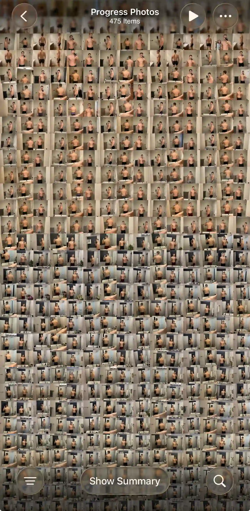

Blog · October 30, 2026 · Mark Stepchin
Camera Roll vs a Progress Photo App: Where to Keep Your Progress Photos
Published Oct 30, 2026.
I used the iOS camera roll to store my progress photos for over two years while working with a trainer. During this time I bulked from 165 to 195 lb over 11 months, followed by a cut to 155 lb over 15 months.
The trainer's app had weekly tracking reminders which helped with consistency. The trainer's view of the app had a comparison view; mine did not. Eventually I got frustrated with my DIY comparison setups, and not finding an app that I enjoyed using, I built my own. Read more about it here.

What a good progress photo setup needs
A good progress photo setup has the following aspects:
- Camera & photo viewing/storage
- Weight & notes tracking
- Comparison
- Alignment
- Reminders for consistency
The camera roll and the iOS photo editor are great for taking photos, storing them, and cropping. You'll need other apps or workflows for tracking weight, photo comparison, alignment, and reminders. Dedicated apps also add quality-of-life improvements across the whole workflow.
Camera roll drawbacks
Your progress photos are mixed with everything else
A separate album keeps them organized, but every photo in an album still shows up in your main Library grid next to screenshots and family photos. Some dedicated apps take photos in their own camera, so they never land in your camera roll.
Your weight lives somewhere else
Photos and weight live in separate places, so analyzing progress is harder. Potential solutions for tracking weight include Notes, Apple Health, or a spreadsheet. Nothing in Photos links a number to the picture on that date.
There's no side-by-side view
To compare two check-ins you flick between them or export to Photoshop, Canva, or a collage-style app. Doing that once is fine; doing it every week for three poses is where DIY setups wear thin.
Lining photos up is hard
Camera's grid and level help you hold the phone straight, but they can't show where your shoulders sat last week. Photos crops and rotates one photo at a time. Some dedicated apps offer manual alignment in compare view; others use AI alignment so small framing differences don't look like body change.
Photos can't remind you to check in
The nudge has to live in Reminders or Calendar, and tapping it doesn't open a check-in. You still hop through Camera, Photos, and wherever you log weight.
Where the camera roll shines: data ownership & backup
Photos in your camera roll are truly under your control. That freedom lets you switch progress photo setups from one app to another without losing the originals. iCloud Photos adds backup and sync across devices; with Advanced Data Protection, your library can be end-to-end encrypted.
I always take photos with the iOS Camera app first, then upload them to a dedicated app or workflow.
Recommended camera roll setups
Hidden Photos
After each check-in, hide the shots so they leave your Library grid. In Photos, tap and hold a progress photo, tap Hide, and confirm. Hidden photos move to the locked Hidden album under Utilities. They no longer appear in your Library, other albums, or the Photos widget. With iCloud Photos on, hiding on your iPhone hides them on your other devices too. Full steps are in Apple's guide to hide photos and videos.
Hidden keeps your photos private, but not organized. Every check-in lands in one locked album with anything else you've hidden.
Separate collection
Keep check-ins in their own album and open it from the Collections tab. Tap Collections, then Albums, and create a new album (for example, “Progress”). After each check-in, add your front, side, and back shots to that album. To add the album to Pinned so it stays at the top, touch and hold it, then tap Pin. The Collections tab also shows Memories and Recent Days alongside Pinned and Albums. Apple's guide to browse your photo collections covers the Collections view, reordering, and pinning.
An album keeps your progress photos together, but they still show up in your Library next to everything else.
To round out the DIY setup, set a weekly repeating reminder for check-in day in Reminders, and use a collage app to put two check-ins side by side.
What a dedicated app adds
A dedicated app puts the pieces the camera roll leaves to other apps in one place. In Recomp, each check-in keeps your front, side, and back photos next to that date's weight and notes. Compare puts two check-ins side by side and saves your alignment per photo, and the share button makes one before/after image. If you're choosing an app, here's how I review progress photo apps.
Import your photos in bulk
Most progress photo apps make you add old photos one check-in at a time, so years of camera roll photos stay stuck where they are. Recomp imports up to 500 photos at once and groups them into check-ins by date, so your whole history is ready to compare in a few minutes.
Your originals in Photos stay untouched. If you logged weight somewhere else, import a CSV of dates and weights and Recomp matches them to your check-ins.
FAQ
How do I hide progress photos on my iPhone?
Tap and hold the photo in Photos, tap Hide, and confirm. It moves to the Hidden album under Utilities, which locks with Face ID on iOS 16 and later. It also disappears from your Library, other albums, and the Photos widget.
Where should I keep my progress pics on my phone?
I keep the originals in my camera roll, backed up by iCloud Photos, and compare them in Recomp. Recomp never uploads your photos. It sends anonymous usage analytics and crash reports, with no account and no tracking.
How do I put two progress photos side by side on iPhone?
Shortcuts can do it: Select Photos, then Combine Images set to Horizontally, then Save to Photo Album. It won't line the photos up, though. In Recomp, Compare puts two check-ins side by side, saves your alignment per photo, and the share button makes one before/after image.
Should I delete progress photos from my camera roll after importing them into an app?
I don't. Recomp's import leaves your originals untouched, and Recomp doesn't have backup yet, so your camera roll and iCloud Photos are your backup.
How do I track weight alongside my progress photos?
Every Recomp check-in holds your weight next to that date's photos. If you logged weight somewhere else, import a CSV of dates and weights and Recomp matches them to your check-ins.
Conclusion
The camera roll is a place to keep your photos, not a place to compare them.
See the progress buried in your camera roll
Compare progress photos on a before-and-after timeline, scroll to any date instantly, and align photos on the fly. Recomp never uploads your photos or weight data.